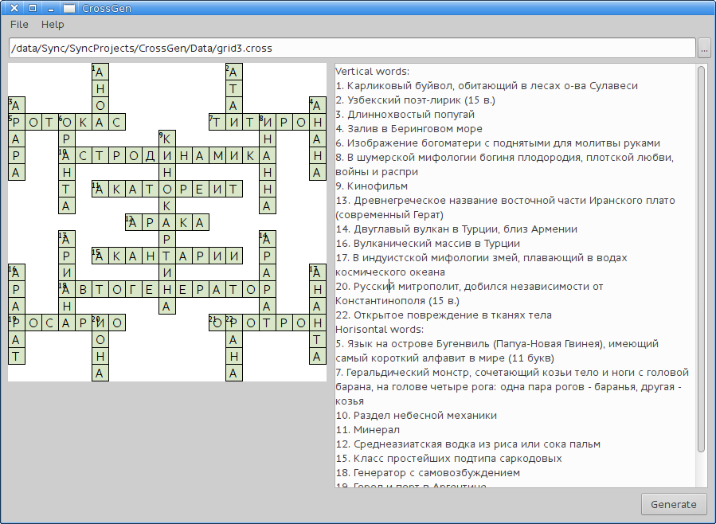
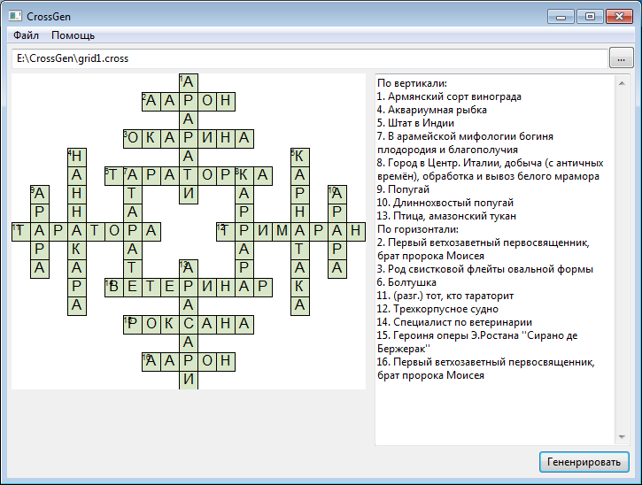

CrossGen v1.0
Начать, наверное, нужно с того, что реальную практическую значимость я осознал после того, как реализовал 90% того, что есть сейчас. Сейчас мне кажется, что единственное применение данного приложения лишь в том, чтобы создавать кроссворды очень сложной или необычной формы. Зачем это надо обычному человеку я вообще не знаю.
Собственно, алгоритм генерации изначально был примитивным: простой рекурсивный поиск с отсечением. Скорость генерации более-менее сложных сеток была ужасной (для перцентиля 30% это примерно 40 минут на этой сетке, в общем случае, время генерации непредсказуемо.
В дальнейшем были выполнены некоторые оптимизации. Первой более-менее значимой стала замена передачи сетки в юникоде (во внутреннем цикле) на передачу сетки в однобайтовой кодировке, таким образом, языки с алфавитом больше ~200 букв пролетают. Впрочем, мне кажется, что им не слишком сильно требуются кроссворды. Такая оптимизация дала ~35% прироста при значимом времени перебора (больше секунды).
В какой-то момент, мне показалось, что оптимизация структуры данных для хранения сетки тоже могла сильно увеличить производительность, но это будет заметно только на разряженных сетках, которые и так достаточно быстро генерируются. На сложных же плотных сетках, прирост скорости может быть минимальным, вплоть до отрицательного. Таким образом, используются просто двумерный массив.
Наибольший прирост, как и ожидалось, дало упорядочивание словаря по некоторому критерию. Таким образом, при переборе, “плохие” варианты будут попадаться редко. На это ушло немногим больше дня. В конечном итоге, целевой функцией, которая стала критерием сортировки, стала такая \(\sqrt[n]{\prod_{i=1}^{n}{f\left( a_i \right)}}\) (иначе говоря, среднее геометрическое отлично подошло), где \(n\) — количество букв в слове, \(a_i\) — буквы слова, а \(f \left( x \right)\) есть вероятность появления буквы \(x\). Я отсекаю примерно половину самых “плохих” слов, а из того, что осталось я составляю кроссворд. Производительность, в среднем, увеличилась в ~1000 раз. На тестовых сетках для перцентиля 90% длительность работы около секунды.
Что реализовано
- Прозрачная интернационализация (пока только русский и английский языки)
- Быстрая генерация
- Экспорт в текстовом формате
- Простая смена словаря
- Относительно простое редактирование сеток
Что может быть реализовано
- Визуальный редактор сетки
- Экспорт в HTML, PDF, Markdown
- Экспорт сетки в файл картинки
Скриншоты
- Версия для Xubuntu: 
- Версия для Windows 7: 